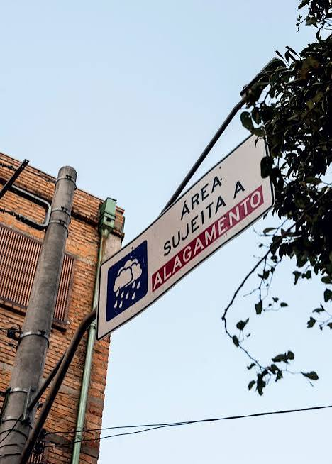

A relação entre o clima e a agricultura sempre foi intrínseca; a terra depende do ciclo das chuvas, das estações bem definidas e das temperaturas amenas para florescer. No entanto, o cenário atual de mudanças climáticas globais transformou essa dependência histórica em uma vulnerabilidade crítica.
A segurança alimentar do planeta está diretamente ameaçada pela instabilidade do clima, tornando a produção de alimentos um dos setores mais expostos e frágeis diante das transformações ambientais em curso.
Ela se caracteriza pela incapacidade dos sistemas agrícolas de resistirem ou se adaptarem aos efeitos adversos do clima. Isso envolve três fatores principais:
Os impactos da vulnerabilidade climática na agricultura vão muito além das lavouras. Quando eventos climáticos extremos reduzem a produtividade agrícola, ocorre uma diminuição na oferta de alimentos, provocando aumento dos preços e dificultando o acesso da população a produtos essenciais. Esse cenário afeta principalmente as famílias de baixa renda, ampliando a insegurança alimentar e as desigualdades sociais.
Além disso, perdas recorrentes nas colheitas comprometem a renda dos produtores rurais, especialmente dos pequenos agricultores, que muitas vezes não dispõem de recursos financeiros para se recuperar dos prejuízos. Como consequência, comunidades inteiras podem enfrentar dificuldades econômicas, êxodo rural e redução da qualidade de vida.
Diante desse desafio, torna-se fundamental investir em medidas que fortaleçam a resiliência dos sistemas agrícolas. A adoção de práticas sustentáveis, como a rotação de culturas, o plantio direto, a recuperação de áreas degradadas e o uso eficiente da água, contribui para tornar a produção mais resistente às variações climáticas.
Da mesma forma, o desenvolvimento de tecnologias agrícolas, incluindo sementes mais adaptadas a condições extremas e sistemas de monitoramento meteorológico, permite que os produtores tomem decisões mais seguras e eficazes. Políticas públicas de apoio à agricultura familiar, acesso ao crédito rural e programas de capacitação também desempenham papel essencial nesse processo de adaptação.

A vulnerabilidade climática na produção de alimentos representa um dos maiores desafios do século XXI. Garantir a segurança alimentar em um contexto de mudanças climáticas exige ações integradas entre governos, instituições de pesquisa, produtores e sociedade. Mais do que aumentar a produção, é necessário construir sistemas agrícolas capazes de resistir, adaptar-se e prosperar diante das incertezas ambientais. Somente por meio de uma agricultura resiliente e sustentável será possível assegurar alimento para as gerações presentes e futuras.
Col. Est. Professora Neiva Pavan Machado Garcia
Vitor G. Boaretto de Liro - N°16